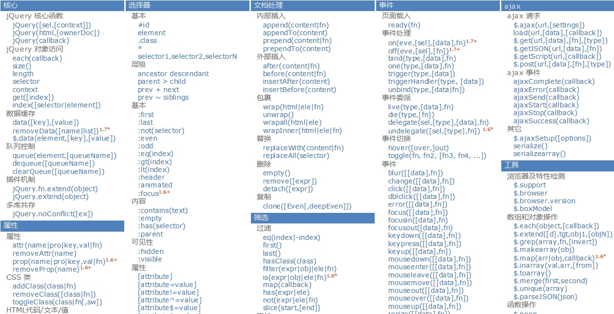
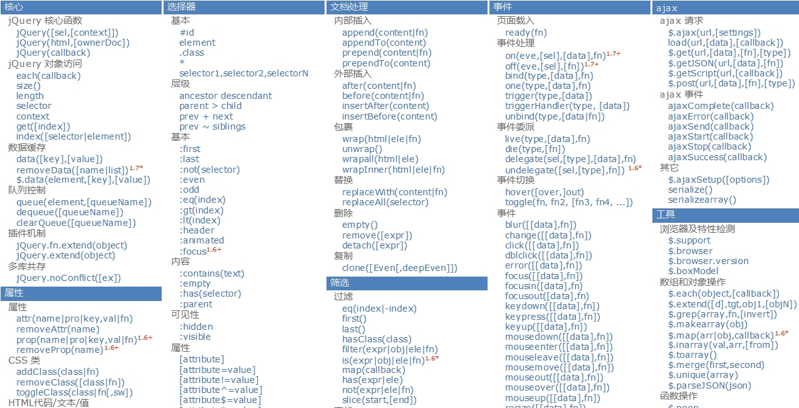

基本知识
window.$===window.jQuery===jQuery
两把利器，jQuery核心函数(如：$('p'))，jQuery对象（执行jQuery函数返回的对象,如$('p').val()），不管执行其任何方法都将自身返回
$(ele)将dom对象封装为jQuery对象，$('selector')[0],:将jQuery对象转化为dom对象
jQuery基本行为：each() size()/length [index]/get() index()
层次选择器，用来查找某个元素的孩子，兄弟...(亲属)如：$('div>.content').css('background','red');过滤选择器：在原有选择器匹配的基础上进一步过滤，如$('div:first')
jQuery操作属性：attr()【传参同html()】 removeAttr() addClass() removeClass() html()【传一个参，取值；传两个参，赋值】 val()
爱好选择器jQuery练习